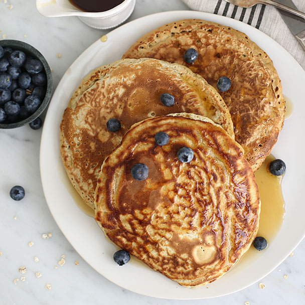

Oatmeal Pancakes

Description
This recipe is one from my mom, and is a Sunday morning classic!
The soaked oats add a bit of texture and flavour that (in my opinion)
elevates these above buttermilk pancakes.
Ingredients
- 1 1/2 cups rolled oats
- 2 cups milk
- 1/2 cup whole-wheat flour
- 1/2 cup all-purpose flour
- 1/2 Tsp. cinnamon
- 1 Tbsp. brown sugar
- 1 Tbsp. baking powder
- 1/2 Tsp. salt
- 2 large eggs
- 1/4 cup oil or melted butter
Steps
- Combine oats and milk in bowl, leave for 10 minutes to soak.
- In a large mixing bowl, sift together dry ingredients. (Everything except eggs, oil, oats)
- In a seperate bowl, combine eggs, oil or butter, oats and milk.
- Add wet ingredients to dry, and mix into a smooth batter.
- Heat pan (I like cast iron) or griddle over medium heat. Add butter or oil to grease pan.
- Add pancake batter in 1/4 cup amounts. Cook on one side until bubbles appear, then flip and cook for ~2 minutes.
Cooking time will vary with pan type, heat, batter amount, etc. You'll figure it out!
Return to home page